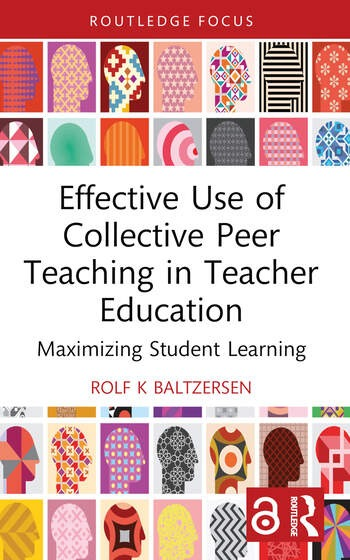

العوامل البشرية في التصميم
HCI1202 · كلية الحاسبات · جامعة أم القرى
معلومات المقرر العامة
اسم المقرر
العوامل البشرية في التصميم
رمز المقرر
HCI1202
عدد الساعات
4 ساعات
المستوى
السنة الأولى / المستوى الثاني
البرنامج
بكالوريوس تفاعل الإنسان والحاسب
القسم
هندسة البرمجيات
الكلية
كلية الحاسبات
الجامعة
جامعة أم القرى
نوع المقرر
إلزامي – قسمي
طريقة التدريس
قاعة دراسية تقليدية (100%)
ساعات التواصل
60 ساعة (محاضرات)
المتطلبات السابقة
لا يوجد
وصف المقرر
يركز المقرر على دمج قدرات الإنسان وحدوده في عملية التصميم لتعزيز قابلية الاستخدام والسلامة ورضا المستخدم.
أهداف المقرر
- دراسة القدرات الإدراكية والمعرفية والجسدية للإنسان لتوجيه قرارات التصميم.
- توظيف نظريات العوامل البشرية والعلوم المعرفية والاجتماعية لفهم وتصميم تفاعل الإنسان مع التكنولوجيا والبيئات المبنية.
مخرجات تعلم المقرر (CLOs)
| الرمز | مخرج التعلم | PLO | استراتيجية التدريس | طريقة التقييم |
|---|---|---|---|---|
| 1.0 – المعرفة والفهم | ||||
| 1.1 | إظهار المعرفة الأساسية بالعوامل البشرية والهندسة البشرية، بما يشمل نظريات HCI ونماذجها ومبادئ التصميم، وشرح أهميتها في إنشاء تقنيات متمحورة حول المستخدم. | K1 | محاضرات، نقاشات | واجبات، اختبارات، اختبار نهائي |
| 2.0 – المهارات | ||||
| 2.1 | تحديد وتقييم العوامل النفسية والجسدية والاجتماعية التي تؤثر على تفاعل المستخدم مع التكنولوجيا، وتطبيق هذه الرؤى في تصميم الأنظمة. | S2 | محاضرات، نقاشات | واجبات، اختبارات، اختبار نهائي |
| 2.2 | إجراء تقييمات بيئية وتقييمات قابلية الاستخدام لتحسين تصميم الواجهات والمنتجات والأنظمة. | S4 | محاضرات، نقاشات | واجبات، اختبارات، اختبار نهائي |
| 3.0 – القيم والاستقلالية والمسؤولية | ||||
| 3.1 | الدفاع عن الشمولية من خلال تصميم حلول تقنية عادلة وسهلة الوصول تستوعب احتياجات المستخدمين المتنوعة وقدراتهم. | V2 | محاضرات، نقاشات | واجبات، اختبارات، اختبار نهائي |
| 3.2 | تعزيز المسؤولية الأخلاقية من خلال مراعاة التأثيرات المجتمعية والثقافية لقرارات التصميم في التقنيات المتمحورة حول الإنسان. | V5 | محاضرات، نقاشات | واجبات، اختبارات، اختبار نهائي |
مواضيع المقرر
- مقدمة في العوامل البشرية والهندسة البشرية (4 ساعات)
- القدرات والحدود البشرية (4 ساعات)
- مبادئ التصميم لقابلية الاستخدام (4 ساعات)
- الإدراك البصري والسمعي في التصميم (4 ساعات)
- العبء المعرفي والخطأ البشري (4 ساعات)
- تحليل المهام وعملية التصميم (4 ساعات)
- الهندسة البشرية الجسدية في تصميم المنتجات (4 ساعات)
- تفاعل الإنسان مع الآلة (HMI) (4 ساعات)
- أساليب التقييم في العوامل البشرية (4 ساعات)
- التصميم لمجموعات المستخدمين المتنوعة (4 ساعات)
- العمل الجماعي والتعاون في التصميم (4 ساعات)
- السلامة وإدارة المخاطر في التصميم (4 ساعات)
- مجالات التطبيق في العوامل البشرية (4 ساعات)
- الاعتبارات الأخلاقية في تصميم العوامل البشرية (4 ساعات)
- الاتجاهات المستقبلية في العوامل البشرية (4 ساعات)
تقييم الطلاب
| # | نشاط التقييم | التوقيت (الأسبوع) | النسبة |
|---|---|---|---|
| 1 | الاختبارات القصيرة | 3 – 14 | 20% |
| 2 | الواجبات | 3 – 14 | 20% |
| 3 | اختبار منتصف الفصل | 7 – 8 | 20% |
| 4 | الاختبار النهائي | 16 – 17 | 40% |
المراجع
مقدمة في العوامل البشرية: تطبيق علم النفس في التصميم (الإصدار الثاني)
ستون، شاباررو، كيبلر، شاباررو، وماكونيل. (2024). CRC Press.
